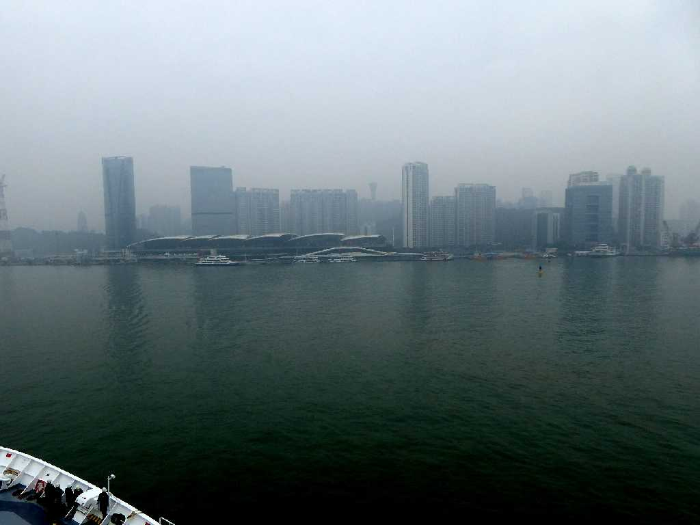
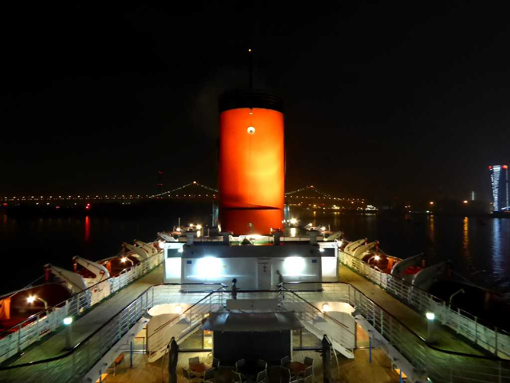
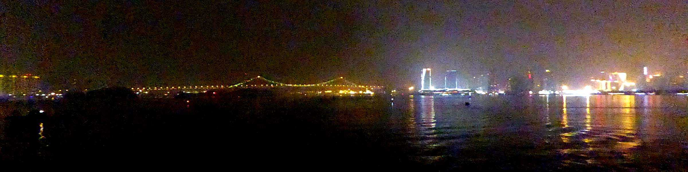
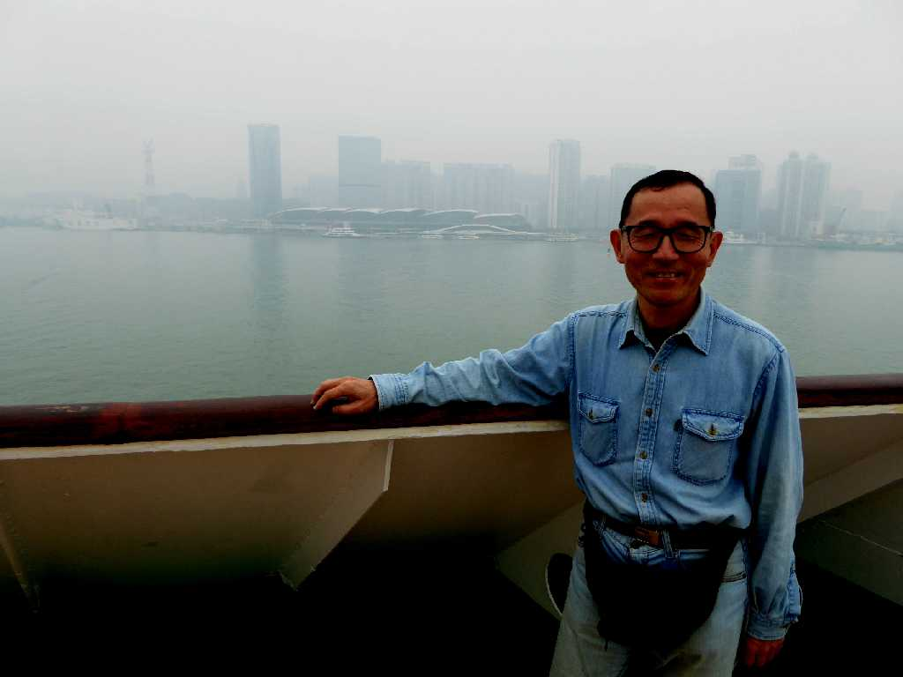

International Cruise Terminal Xiamen 廈門
地球一周の船旅出港６日目２,６６３ｋｍ航行し中国５大経済特区の一つで福建省土楼観光の拠点であるアモイに到着

Ocean Dream Haicang Bridge Xiamen 廈門 海沧大桥

Night View Xiamen 廈門

December 22 2015 International Cruise Terminal Xiamen 廈門